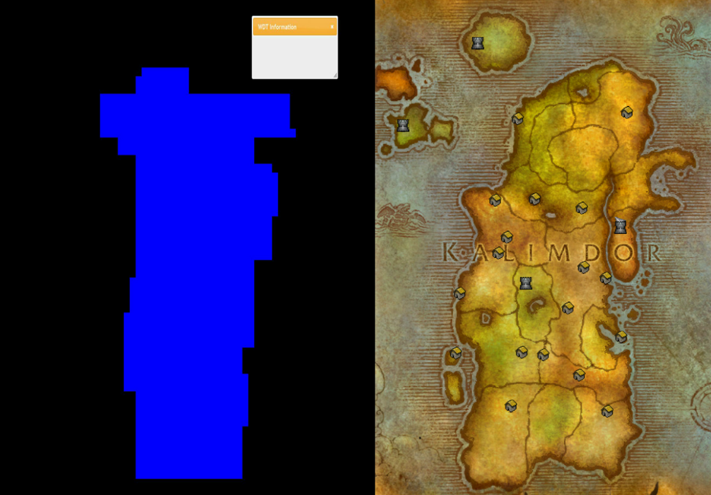
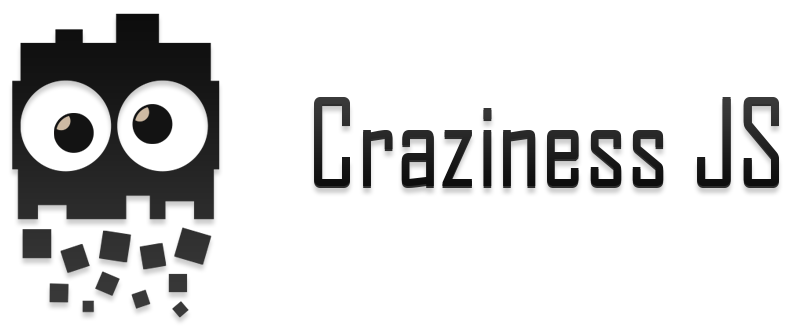
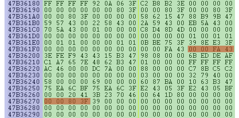

Hacking ético de videojuegos con HTML5
JavaScript y mis locuras.
Carlos Hernández Gómez
(@k4rliky)
SOBRE MÍ
Desarrollador de 22 años, viviendo en Bilbao. Mi primera página web la hice utilizando Composer de Netscape.

¿El hacking es ético?
Un hacker no es un delincuente, vándalo o pirata informático con altos conocimientos técnicos, sino que hacker es todo aquél que trabaja con gran pasión y entusiasmo por lo que hace. Pekka Himanen.
Hacking != Cracking
Nogg-aholic
Grupo de hacking ético que se dedica a explorar los errores o problemas técnicos de un juego que en teoría no deberían existir.
nogg-aholic.comPasando de un lenguaje a otro
C++ -> PHP -> JS

C++
A mi esto no me gusta :/

PHP
Clases de PHP para World Of Warcraft
http://code.google.com/p/php-wow/- Editor de mapas
- Editor de continentes
- Editor de modelos 3D
Editor de mapas en PHP
$MyAdt = new ADT();
$MyAdt->ADT_Open("Azeroth_32_48.adt");
$MyAdt->ADT_Terrain(35,"down");// or up!
Editor de mapas en PHP
Clase PHP para editar continentes
Editor de modelos 3D en PHP
Big Head Mode

HOLA, MI NOMBRE ES JAVASCRIPT Y ESTO ES JACKASS
Quiero una librería
Hammer.js, Kinetic.js, Morris.js, HoverDir.js, Reveal.js, CanJS, jQuery, MiniJS, Presenteer JS, Pep JS, ResponsiveSlides.js, Pow.js, Pivot.js, Storage.js, Lake.js, Glisse.js, Turn.js, Validate.js, Grumble.js, Baseline.js, FitText.js, Kerning.js, SlabText.js, Moment.js, sortByTimeAgo.js, Countdown.js.
Características de la librería
- Tiempo real (Node.js, Web sockets)
- Manejo de procesos
OpenProcess(),
ReadProcessMemory(),
WriteProcessMemory()... - Interpretar datos en bruto
- Que sea fácil de usar
NodeJS + Addons + C++
Crazy Example
Warhammer Online
Servidor Node.js
var craziness = require("craziness");...io.sockets.on('connection', function(socket) {
var myProcess = craziness.OpenProcess("WAR.exe");
...
var playerSpeed = craziness.Read(myProcess,0x00F7611C + 0x9c);
...
craziness.Write(myProcess,baseCamera + 0x1fc,data.value,"float");
});...node server.jsEstructura de memoria

craziness.Nop();
(No operation) Instrucción en lenguaje ensamblador que "no hace nada".
var assembly_code = craziness.Nop(myProcess,0x00473201,8);HTML5 en el escritorio
Guild Wars 2

Appjs: Build Desktop Applications for Linux, Windows and Mac using HTML, CSS and Javascript
Node.js + App.js + Craziness.js = WIN
Click 2 teleport
craziness.listenKeys([0x11,0x01],function(){
teleport(myProcess,playerVisualBase,playerRealBase);
});Click to teleport
Mover personaje -> Teletransportar personaje
function teleport(myProcess,playerVisualBase,playerRealBase){
var destino = {
x : craziness.Read(myProcess,0x016B3628).readFloatLE(0) / 32,
y : craziness.Read(myProcess,0x016B3628 + 4).readFloatLE(0) / 32,
z : Math.abs(craziness.Read(myProcess,0x016B3628 + 8).readFloatLE(0) / 32)
}
if(destino.x.toString() == "Infinity") {
craziness.Write(myProcess,0x016A5548,0,"int"); return false;
}
var v = 0.3;
while (true){
craziness.Write(myProcess,playerRealBase + 0xc8,-1,"float"); // No clip
craziness.Write(myProcess,0x016B4E98,1,"int"); // Ordenamos al personaje moverse
var playerPos = {
xVisual : craziness.Read(myProcess,playerVisualBase + 0xb4).readFloatLE(0),
yVisual : craziness.Read(myProcess,playerVisualBase + 0xb8).readFloatLE(0),
zVisual : craziness.Read(myProcess,playerVisualBase + 0xbc).readFloatLE(0),
xReal : craziness.Read(myProcess,playerRealBase + 0xD0).readFloatLE(0),
yReal : craziness.Read(myProcess,playerRealBase + 0xD4).readFloatLE(0),
zReal : craziness.Read(myProcess,playerRealBase + 0xD8).readFloatLE(0)
} // Obtenemos la posición del jugador.
craziness.Write(myProcess,0x016B4E98,0,"int");
var dx= destino.x - playerPos.xVisual;
var dy= destino.y - playerPos.yVisual;
var dz= destino.z - playerPos.zVisual;
var dist = Math.sqrt(dx*dx+dy*dy+dz*dz);
if(dist<=v) {
console.log("Hemos llegado al punto, salimos del bucle infinito.");
craziness.Write(myProcess,playerRealBase + 0xc8,1,"float"); // No clip
craziness.Write(myProcess,playerVisualBase + 0xbc,playerPos.zVisual +10,"float");
craziness.Write(myProcess,playerRealBase + 0xD8,playerPos.zVisual +10,"float");
craziness.Write(myProcess,0x016B4E98,0,"int");
break;
} else {
craziness.Write(myProcess,playerVisualBase + 0xb4,playerPos.xVisual + (v*dx/dist),"float");
craziness.Write(myProcess,playerVisualBase + 0xb8,playerPos.yVisual + (v*dy/dist),"float");
craziness.Write(myProcess,playerVisualBase + 0xbc,playerPos.zVisual + (v*dz/dist),"float");
craziness.Write(myProcess,playerRealBase + 0xD0,playerPos.xVisual + (v*dx/dist),"float");
craziness.Write(myProcess,playerRealBase + 0xD4,playerPos.yVisual + (v*dy/dist),"float");
craziness.Write(myProcess,playerRealBase + 0xD8,playerPos.zVisual + (v*dz/dist),"float");
}
};
craziness.Write(myProcess,playerRealBase + 0xc8,1,"float"); // No clip
}
The only thing between you and your goals

is you
¡¡Muchas gracias!!
¿Alguna pregunta?
Prueba Craziness JS https://github.com/karliky/CrazinessJS - (Distributable)
npm install craziness@k4rliky - karliky@gmail.com
Gracias a todas las personas que me han ayudado a que esto sea posible:
Dopefish, Cryect, Malu05, ladyCircus, Serginator, Gnauren(Bemoliph), Shn, Ch0p, Tigers (Gay), Hergonan, Mysterious, NiNtoxicated, D3s7r0, Nayra, Akg, Forg, G33k, B4t4dead, MoD, Schlumpf_, Suchtino,Witchsong, Zintos, Zor, Alram, Thunder, Dotted, Floodge, Alogon, Chosi, ClawX, Cybimaus, Syselkitna, Deletio,Drejjmit, EvelynOFF, Funkeh, IeMag, Intenso, Jepz, KaNNis|ZzZ, KavSelj, MantaZZz, MiRia, Morbe, mrd3wd, Najimi, Riqpe, Sikk, Tetsu ... :)